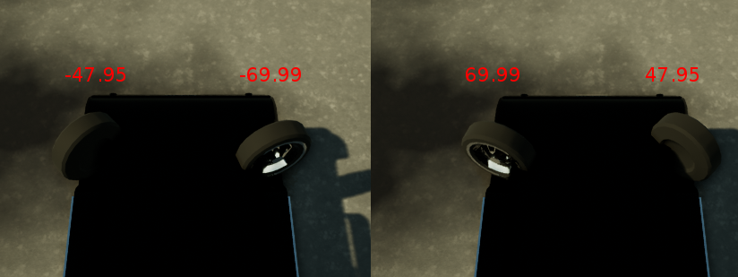

测量¶
!!! 重要
自 0.8.0 版起，客户端接收的测量值采用国际单位制。所有位置均已转换为 米，速度也已转换为 米/秒。
服务器每帧都会向客户端发送一个包含测量值和收集到的图像数据包。本文档描述了这些测量值的详细信息。
时间戳¶
每个帧由三个不同的计数器/时间戳描述
| 键 | 类型 | 单位 | 描述 |
|---|---|---|---|
| frame_number | uint64 | 帧计数器（不会在每集结束后重新启动）。 | |
| platform_timestamp | uint32 | 毫秒 | 当前帧的时间戳，由操作系统给出。 |
| game_timestamp | uint32 | 毫秒 | 游戏中的时间戳，自当前剧集开始以来经过的时间。 |
在实时模式下，两个时间步长之间的经过时间应与平台和游戏时间戳相似。在固定时间步长中运行时，游戏时间戳以恒定时间步长递增（delta=1/FPS），而平台时间戳保持实际经过的时间。
玩家测量¶
| 键 | 类型 | 单位 | 描述 |
|---|---|---|---|
| transform | Transform | 玩家的世界变换（包含位置和旋转）。 | |
| acceleration | Vector3D | m/s^2 | 玩家当前的加速度。 |
| forward_speed | float | m/s | 玩家的前进速度。 |
| collision_vehicles | float | kg*m/s | 与其他车辆的碰撞强度。 |
| collision_pedestrians | float | kg*m/s | 与行人的碰撞强度。 |
| collision_other | float | kg*m/s | 一般碰撞强度（除行人和车辆以外的一切）。 |
| intersection_otherlane | float | 车辆侵入其他车道的百分比。 | |
| intersection_offroad | float | 汽车越野的百分比。 | |
| autopilot_control | float | 车辆的自动驾驶控制将应用此框架。 |
变换¶
变换包含玩家的位置和旋转。
| 键 | 类型 | 单位 | 描述 |
|---|---|---|---|
| location | Vector3D | 米 | 世界位置。 |
| orientation [已弃用] | Vector3D | 以笛卡尔坐标表示的方向。 | |
| rotation | Vector3D | 度 | 俯仰、滚转和偏航。 |
碰撞¶
碰撞变量保存了此事件中发生的所有碰撞的累积。每次碰撞都会按比例影响碰撞强度（两个碰撞物体之间的法向冲量的范数）。
保留三种不同的计数（行人、车辆和其他）。碰撞物体根据其标签进行分类（与语义分割相同）。
!!! 漏洞 参见 #13 当车辆速度较低时，不会标注碰撞
如果车辆没有移动（<1 公里/小时），则不会注释碰撞，以避免由于非玩家代理的 AI 错误而注释不必要的碰撞。
车道/越野路口¶
车道交叉口测量车辆侵入对面车道的百分比。越野交叉口测量车辆在道路外的百分比。
这些值是通过车辆边界框（作为 2D 矩形）与城市地图图像相交计算得出的。这些图像在编辑器中生成并序列化以供运行时使用。您也可以在发布包中的“RoadMaps”文件夹下找到它们。
自动驾驶仪控制¶
测量autopilot_control结果包含游戏内自动驾驶系统在控制车辆时所应用的控制值。
这与将车辆控制发送到服务器的结构相同。
| 键 | 类型 | 描述 |
|---|---|---|
| steer | float | 转向角度在 [-1.0, 1.0] 之间 (*) |
| throttle | float | 油门输入介于 [ 0.0, 1.0] 之间 |
| brake | float | 刹车输入介于 [ 0.0, 1.0] 之间 |
| hand_brake | bool | 手刹是否拉紧 |
| reverse | bool | 车辆是否处于倒档 |
要从客户端激活自动驾驶仪，请将autopilot_control发送回服务器。请注意，您可以在将其发送回之前对其进行修改。
measurements, sensor_data = carla_client.read_data()
control = measurements.player_measurements.autopilot_control
# modify here control if wanted.
carla_client.send_control(control)
